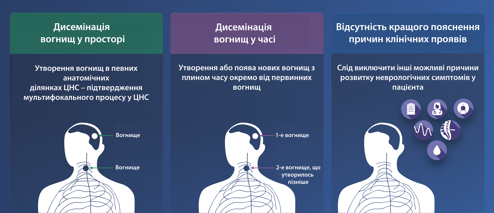

Діагностика РС з використанням критеріїв МакДональда у редакції 2017 року
Для того, щоб поставити пацієнту діагноз РС у відповідності до критеріїв МакДональда у редакції 2017 року, лікар-невролог має продемонструвати 3 речі:
